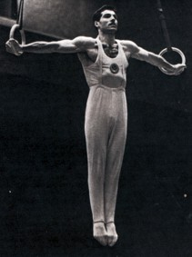

| Albert Azaryan (USSR) |
1954 and 1958 World R Champion
1955 European R and PB Champion
1956 and 1960 Olympic R Champion

|
Medal Total Olympic Games: 3
Gold, 1 Silver |
Known as the "king of the rings," Albert Azaryan was born on February 11, 1929. His father died when Albert was 14, so he left school and got a job as an ironsmith to help support his family. When he was 17, a group of top Armenian gymnasts gave an exhibition in his town. After the exhibition, some teenage boys -- Albert among them -- climbed on the apparatus and tried to perform the skills they had just seen. Albert was so impressive that he was invited to move to Yerevan to train. After only three years, he became the Armenian champion on rings and earned a Master of Sport ranking. Albert became the director of a sports school in Yerevan after retiring. Although neither of his two daughters followed in their father's footsteps, his son, Eduard, also became a successful international gymnast. Albert carried the Armenian flag at the Athens Games' opening ceremonies. He died on September 5, 2023.
Competition Results
1952
USSR Championships: 11th AA, 2nd R, 5th HB
1953
FRA-USSR Dual Meet: 1st Team, 3rd AA
USSR Championships: 5th AA
1954
USSR Championships: 5th AA
World Championships: 1st Team, 4th AA, 1st R, 4th V
1955
European Championships: 2nd AA, 1st R, 1st PB
USSR Championships: 114th AA
1956
Olympics: 1st Team, 7th AA, 1st R, 1st PB
USSR Championships: 7th AA
1957
Moscow Summer Sports Games: 1st Team, 3rd AA
USSR Championships: 8th AA
1958
USSR Championships: 10th AA
World Championships: 1st Team, 7th AA, 1st R, 2nd HB,
6th PH
1959
BUL-USSR Dual Meet: 1st Team, 4th AA
FRG-USSR Dual Meet: 1st Team, 5th AA, 1st R, 2nd PB, 2nd HB
USSR Championships: 4th AA
1960
Olympics: 2nd Team, 11th AA, 1st R
USSR Championships: 13th AA
1962
USSR Championships: 14th AA
1964
USSR Championships: 13th AA
1965
USSR Championships: 3rd R
This page was created on December 17, 2000 and
was last updated on September 18, 2026.
© Gymn Forum